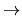

We are to predict some facts about the behavior of a single processor designed for running two programs in parallel. Programs are sequences of commands according to the following grammar:
| <Program> |  | <Command>* |
| <Command> | <Variable> := <Operand> <Operator> <Operand> | |
| <Operator> | + | - | |
| <Operand> | <Variable> | <Constant> |
A <Variable> is a sequence of (at most 20) alphanumeric characters (A...Z, a...z, and 0...9) starting with a letter (not case sensitive). A <constant> is an unsigned integer number (less than 100). There may be arbitrary number of blank or tab characters between tokens.
Before execution, programs are translated into machine language. A statement of the form X := Y + Z is translated to the following set of machine instructions:
Mov R1, Y Mov R2, Z Add R1, R2 Mov X, R1
A MOV instruction copies the content of its second operand into its first operand. An `Add (Sub)' instruction, adds (subtracts) its second operand from its first operand and the result is stored in the first operand. Note that Y and Z denote either a variable or an integer constant. Instructions generated for the command X := Y - Z is similar to the above instructions, except that `Sub' command is used instead of `Add'.
The processor is given two machine language programs and starts executing them from the first instruction. In each step, it randomly selects one of the two programs and runs the next instruction from the selected program. This continues until one program reaches its end. In this situation, the remaining instructions from the other one are executed sequentially to the end and the processor stops. It is assumed that all variables are shared between two programs, but each program has a separate register set. The goal of this program is to compute the expected final value of all variables among all possible executions of the programs. More precisely, we want to consider every possible execution of the two programs and for each variable, calculate the average of its final value in different executions. It is assumed that the initial value of all variables is zero.
The first line of the input file contains a single integer t (
1 t
t 10), the number of test cases, followed by the input
data for each test case. The data for each test case consists of a
pair of programs. Each program is written as a sequence of
consecutive lines, each line containing exactly one command.
Programs end with a line containing only the word `END'. You
may assume that no variable in any program is named `END'. There
is no blank line between programs of one test case. There are at
least one and at most 25 lines in each program. Total number of
variables in two programs is no more than 10.
10), the number of test cases, followed by the input
data for each test case. The data for each test case consists of a
pair of programs. Each program is written as a sequence of
consecutive lines, each line containing exactly one command.
Programs end with a line containing only the word `END'. You
may assume that no variable in any program is named `END'. There
is no blank line between programs of one test case. There are at
least one and at most 25 lines in each program. Total number of
variables in two programs is no more than 10.
For each test case, the output file should contain the expected final value of all variables in alphabetical order of variable names (digits precede letters in this order). Output for different test cases should be separated by exactly one blank line. Round the numbers in the output to 4 digits after decimal point. Do not omit trailing zeros after decimal point (e.g. write 1.2000 instead of 1.2).
1 S := 1 + 3 END S := S+S END
3.0000